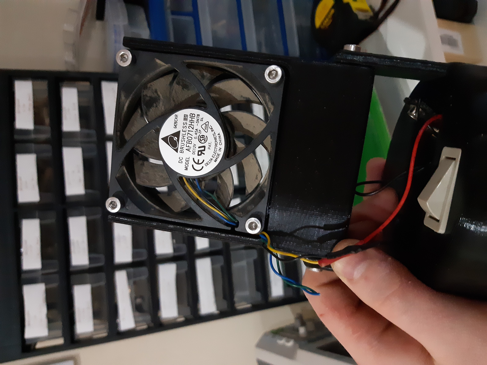
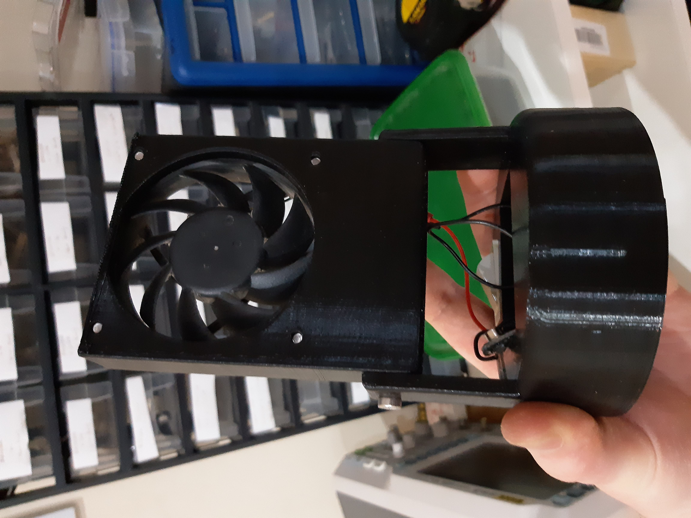
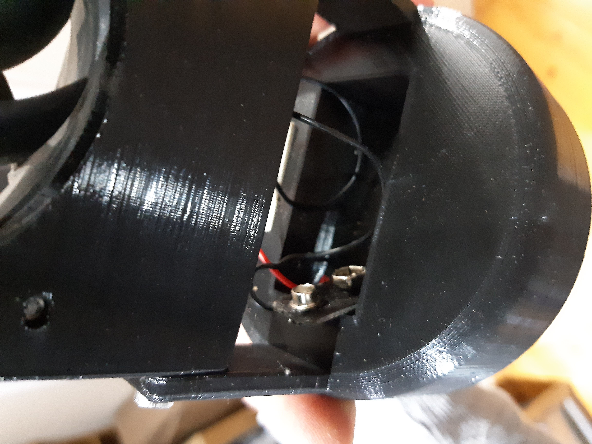

This project is a simple, practical solution for improving soldering ventilation. It reuses an old PC fan combined with a few 3D-printed parts to create a small fan powered by a 9V battery. The fan helps draw away soldering fumes, improving safety and comfort.



The fan housing is designed to direct airflow efficiently and hold the fan in place. The 9V battery powers the fan for a convenient and portable ventilation setup. This project encourages reuse of old components and simple fabrication with a 3D printer.
You can customize the fan housing design or add a switch for better control. The project is beginner-friendly and a good way to practice 3D printing and simple electronics assembly.
If you want advice or help with building your own solder fume fan, feel free to contact me.